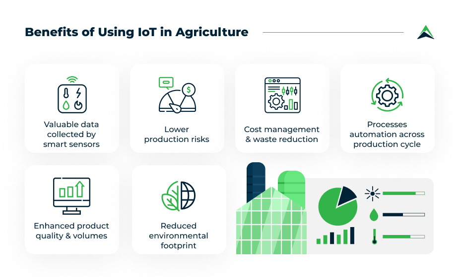

Smart Farming
September 15, 2023
Revolutionizing Agriculture with IoT: A Comprehensive Guide
The integration of Internet of Things (IoT) technology in agriculture is transforming traditional farming practices. Smart sensors deployed across fields collect real-time data on soil moisture, temperature, and crop health, enabling farmers to make data-driven decisions.
Key IoT Applications:
- Precision irrigation systems reducing water usage by 40%
- Livestock monitoring through GPS-enabled collars
- Automated pest detection using image recognition
- Predictive analytics for crop yield optimization
Recent case studies from California's Central Valley show IoT adoption has increased average yields by 22% while reducing chemical usage by 35%. Farmers can now monitor their fields remotely through mobile apps, receiving instant alerts about potential issues.